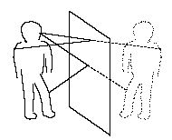

Law of Reflection
A light ray incident upon a reflective surface will be reflected at an angle equal to the incident angle. Both angles are typically measured with respect to the normal to the surface. This law of reflection can be derived from Fermat's principle.
|
The law of reflection gives the familiar reflected image in a plane mirror where the image distance behind the mirror is the same as the object distance in front of the mirror. |  |
| Illustration |
Grating concepts